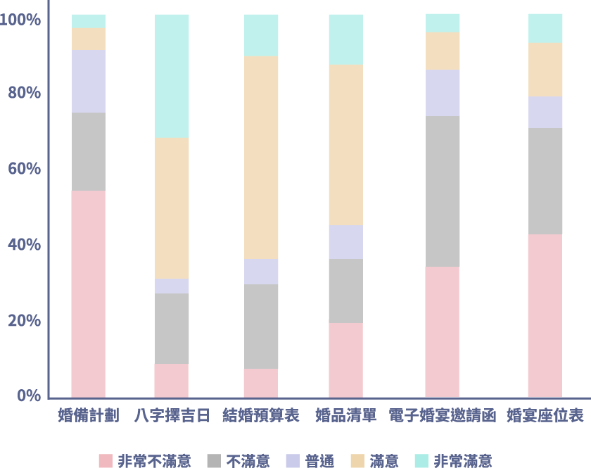

類型
備婚工具 Redesign（Website）
工作專案
角色
UI Designer（介面設計、視覺設計、互動設計）
UX Designer（用戶研究、資訊架構、使用者測試）
團隊
三個人（我和一位產品經理，及一名全端開發工程師）
期間
2018 年 8 月 - 2018 年 10 月
產品介紹
婚禮是許多人憧憬的事，但繁鎖的習俗、流程，及鎖碎的事宜，卻讓新人退避三舍，而 MARRY I DO 即是讓繁瑣的過程變得高效和便捷的婚禮籌劃平台。
MARRY I DO 是一站式婚禮籌劃平台，平台上除了串聯結婚所需要的大小廠商外，也提供備婚工具（例如：婚備計劃、電子婚宴邀請函、婚宴座位表、婚品清單…等等），讓新人能在平台上輕鬆完成籌備婚禮的大小事。
Redesign 原因
MARRY I DO 與其他婚禮籌劃平台最大的差異化在於備婚工具，在平台上備婚工具的使用率高達八成，且備婚工具也是其重要的商業模式之一，但平台收到眾多使用者投訴備婚工具不易使用及操作，因而導致備婚工具的使用率逐步下降，且轉換率低。
Redesign 目標
提升
使用滿意度
優化備婚工具的 UI 及 UX 設計，解決易用性問題，進而提升滿意度
降低
放棄率
透過數據分析辨識流失嚴重環節，改善其流程及使用者體驗，降低達成目標的放棄率，並提升使用率
提升
轉換率
透過提升易用性、降低放棄率，及完善缺失功能...等，優化使用者的體驗，進而提升轉換率
挑戰
-
備婚工具 Redesign 的範圍界定不斷更改
因客戶經費及專案時間壓縮的關係，導致備婚工具 Redesign 的範圍不斷更改（最終 Redesign 的範圍界定為使用率及轉換率前三高的備婚工具）。 -
在招募用戶進行易用性測試上較為困難
因備婚新人（產品的用戶）傾向於更加忙碌，所以在招募用戶進行易用性測試上較為困難。
改版流程
調查
在調查階段，首先進行問卷調查及 Google Analytics ，以便瞭解用戶使用備婚工具的概況，接下來對用戶進行了易用性測試，觀察用戶的使用歷程，發現用戶的痛點，且為了找尋用戶和客戶間的平衡點，對客戶內部的利害關係人進行了訪談，詳細內容如下所述：
問卷調查及 Google Analytics
主要目的是為了得知使用率及轉換率前三高的備婚工具，界定 Redesign 範圍，並透過 Google Analytics 的數據瞭解各備婚工具離開率最高的使用環節，找出痛點
問卷調查
對婚禮籌備前、中和後期都有使用備婚工具的用戶進行調查，採電子問卷方式，總計回收 43 份問卷。問卷調查主要集中於以下面向：
-
各備婚工具使用的頻率
-
各備婚工具的使用滿意度
-
各備婚工具滿意及不滿意的事項
-
遇到挫折而沒有再使用的備婚工具為何
-
遇到什麼挫折而不再使用此備婚工具
-
有付費使用進階功能的備婚工具為何
-
因為什麼動機而付費使用備婚工具
Google Analytics
除了進行問卷調查外，我們也進行 Google Analytics 的數據分析，在 Google Analytics 中我們主要檢視以下幾項用戶行為的數據：
-
各備婚工具的使用率
-
各備婚工具達成目標的放棄率
-
用戶在各備婚工具中的哪個使用環節流失最高（離開率）
-
各備婚工具的轉換率
易用性測試
觀察用戶的使用歷程，並收集用戶在操作備婚工具時所遇到的主要問題，進而發現痛點，確定用戶體驗需改善的地方
參加者
由參與問卷調查的用戶中招募了六位測試者。
測試範圍
因經費及時間有限，只針對使用率及轉換率前三高的備婚工具（需進行 Redesign 的備婚工具）進行易用性測試（問卷調查和 Google Analytics 的分析結果顯示，使用率及轉換率前三高的備婚工具為婚宴座位表、婚備計劃、電子婚宴邀請函）。
任務
-
1利用範本編排婚宴座位，並分享婚宴座位表
受測者任務
利用五十桌的婚宴座位範本，編排您訂婚婚宴的座位表，且安排賓客的座位，完成後將此座位表分享給即將參與婚宴的賓客。受測者挫折點及反饋
- 1.
在編排場地時，不知如何新增和刪除桌位，及如何編輯桌位名稱，也不知如何增加和刪除座位。
- 2.
將問卷的來賓與座位表連動很方便且節省時間，但希望編排場地時能一同安排賓客座位，不要分兩個步驟，覺得多此一舉。
- 3.
問卷匯入安插在婚宴座位表的步驟中覺得很突兀，且平台沒有解釋匯入問卷的目的，導致選擇錯誤的問卷匯入（到最後安排賓客座位的步驟時，才瞭解問卷賓客與編排座位是連動，所以又重新匯入另一份問卷）。
- 4.
在安排賓客座位時，賓客分為問卷來賓、自訂來賓、所有來賓，不瞭解這三個類別間的區別，進而造成座位重複安排。
- 5.
在分享座位表給賓客前，不能預覽婚宴座位表，無法確定座位整體的編排情形。
- 6.
用線上排婚宴座位取代紙本編排的想法很棒，但目前此功能不易操作，希望能修改，修改後願意付費使用婚宴座位表的進階功能。
- 1.
-
2用範本新增婚宴邀請問卷，並分享問卷且查看問卷回應
-
3在婚備計劃表中編輯待辦事項，並找尋完成待辦事項所需的商家
受測者任務
修改結婚前一年婚備計劃中挑選戒指項鍊待辦事項的名稱，並透過此項待辦事項連結到婚戒商家的頁面。受測者挫折點及反饋
- 1.
沒有如何修改待辦事項的圖示或引導，摸索了很久才知道點擊待辦事項可編輯待辦事項名稱。
- 2.
完全不知道如何在挑選戒指項鍊的待辦事項中，連結到婚戒商家。
- 3.
有用過其他類型的計劃表，覺得這個婚備計劃表還缺少很多功能，例如：如何觀看已經完成的待辦事項。
- 1.

內部利害關係人訪談
藉由內部利害關係人訪談探討備婚工具的需求及問題，讓客戶中與專案有關的利害關係人有一致的目標，且從不同角度切入，找尋用戶和客戶間的平衡點，以便訂定對雙方都有益的解決方案
調查結果分析
我們整理了調查的資料及數據，進行問卷及 Google Analytics 數據分析，並對客戶內部利害關係人需求和用戶痛點進行綜合分析，以便訂定對雙方都有益的解決方案
問卷調查及 Google Analytics 數據
針對問卷調查及 Google Analytics 中重要問題的數據進行展示
各備婚工具使用率（使用期間設定為半年的籌備期）
各備婚工具使用滿意度
問卷調查及 Google Analytics 數據分析小結
透過問卷調查及 Google Analytics 數據可得知，使用率及付費轉換率前三高的備婚工具為婚宴座位表、婚備計劃、電子婚宴邀請函，因此我們針對此三項備婚工具進行 Redesign ，但同時經由數據可發現備婚工具的付費轉換率皆不高不到 1% ，且婚宴座位表、婚備計劃、電子婚宴邀請函的不滿意度和達成目標的放棄率（展示的數據不是付費完成的放棄率）皆高於 50% 以上，其中不滿意度更是高達 70% 以上。
排除各備婚工具操作流程最終頁面的離開率後，Google Analytics 數據呈現婚宴座位表離開率最高的使用環節為場地編排（離開率為 71.3% )，第二高的使用環節為問卷匯入（離開率為 56.2% )、電子婚宴邀請函離開率最高的使用環節為問卷範本編輯（離開率為 66.9% )，第二高的使用環節為自訂問卷製作（離開率為 41.8% )。備婚工具 Redesign 時會針對以上離開率高的使用環節進行修改，以達到降低放棄率，及提升使用滿意度和付費轉換率的目標。

關鍵洞察
經由問卷調查和 Google Analytics 數據分析、易用性測試、內部利害關係人訪談，發現婚宴座位表、婚備計劃、電子婚宴邀請函共同都有以下四項核心的問題，即是我們最需要修改的地方
可用性不佳，且無適時的給予用戶引導
介面不易操作，且無提示及引導，用戶甚至無法發現預設的功能，且在用戶發生錯誤時，沒有提供訊息幫助用戶解決錯誤，導致使用體驗不良。在婚宴座位表-場地編排及座位編排、電子婚宴邀請函-問卷範本及問卷製作、婚備計劃-編輯代辦事項及連結商家上此問題特別嚴重。
流程複雜，完成目標需要更長的過程
程序步驟無整合歸納，過於繁雜，一個步驟可完成的目標被細分為多個步驟，造成用戶混亂且不便，且易造成錯誤，導致在完成所需目標上耗費了更長的時間。在婚宴座位表-座位編排上此問題特別嚴重。
介面資訊配置不佳，內容含義不明不易理解
介面佈局不佳，資訊無顯示在適當的位置，造成用戶耗費過多的時間找尋；且按鈕和圖示無加註文字，導致用戶誤解及不明瞭其含義。在電子婚宴邀請函-新增問卷及問卷製作上此問題特別嚴重。
功能不完善
此三個備婚工具（婚宴座位表、婚備計劃及電子婚宴邀請函）都具有許多功能不完善的問題，例如：無法預覽、無法線上查看回應、無法新增事項...等，無法滿足用戶需求，易造成用戶流失。
設計目標與解決方案
將洞察和痛點轉化為設計點，接下來進行頭腦風暴，定義出主要解決方案和設計目標
核心問題
設計目標與解決方案
提供用戶一個熟悉且可預測的操作環境，並給予適當的引導及回饋
簡化不必要的流程，讓用戶用最少的操作步驟達成目標
讓介面資訊在適當的地方顯而易見，並清楚的標示
完善用戶所需的重要功能
高擬真原型
根據低擬真原型易用性測試的結果，我們對備婚工具進行修正製作出高擬真原型，希望在上線前利用高擬真原型再進行一輪易用性測試，讓備婚工具更加完善
婚宴座位表
問題1可用性不佳且流程複雜
簡化流程及編排座位的介面，讓用戶以直覺式的操作，並給予適當的回應及引導
將婚宴座位表新增座位表和編排座位的流程簡化，將五個步驟（選擇婚宴類型 → 選擇桌數範本 → 問卷匯入 → 場地繪製 → 編排座位）簡化為三個步驟（新增座位表 → 編排座位表 → 發布座位表），讓用戶在最少的操作次數內即可達成目標；並且將原先編排座位的拖拉新增物件及以點擊來編輯物件內容的功能，改為一鍵即可新增及編輯，讓用戶以最簡單且直覺的方式操作。
問題2功能不完善，無法滿足用戶需求
以用戶為出發點，完善婚宴座位表重要缺失的預覽功能
在問卷調查和易用性測試中，許多用戶反應無法預覽婚宴座位造成他們很大的困擾，因為無法得知場地整體編排的情形。因此，以用戶為中心作為出發點，優先增加了預覽座位表的功能，並且新增了座位表連結分享至通訊軟體、編輯座位表及刪除座位表等功能。
電子婚宴邀請函
問題1介面資訊配置不佳且含義不易理解
讓資訊顯示在適當的位置，並以文字清楚的標示
許多用戶表示新增問卷的按鈕不顯眼，且圖標意義不清也無加註文字說明，導致用戶耗費較多時間在找尋新增問卷處。因此，重新設計時，我們以適當的方式（清楚的文字標示）在適當且明顯的地方顯示介面資訊（將新增問卷的按鈕放置在問卷總覽介面的大標題旁），讓用戶可以快速且正確的解讀介面資訊的意思。並且我們將原本新增問卷和範本選擇所需的兩個步驟，整合為一個步驟，用一鍵即可完成問卷新增。

{kind=link}
{kind=link}
{kind=link}
{kind=link}
{kind=link}
{kind=link}
{kind=link}
{kind=link}
{kind=link}
{kind=link}
{kind=link}
{kind=link}
{kind=link}
{kind=link}
{kind=link}
{kind=link}
{kind=link}
{kind=link}
{kind=link}
{kind=link}
易用性測試
由用戶中招募了六位在婚禮籌備前期、中期和後期都有使用備婚工具的受測者進行高擬真原型的易用性測試，透過受測者與備婚工具的互動，瞭解 Redesign 後是否符合使用者的期望
任務
我們為受測者提供使用情境，並規劃以下幾項任務需要受測者完成
-
1
新增三十桌結婚婚宴座位表來編排座位，編排完成後預覽座位表，確認無誤後用 LINE 分享座位表連結網址給來參與婚宴的賓客。
-
2
編輯我的結婚邀請函，並為邀請函新增一題複選題，編輯完成後用臉書分享結婚邀請函的連結，並查看結婚邀請函的回應統計。
-
3
查看婚備計劃中尚未完成的待辦事項，並在結婚前一年的類別中新增一項尚未完成的待辦事項。
-
4
利用婚備計劃中，結婚前半年到一年類別裡確定婚紗攝影公司的待辦事項，尋找所需的婚紗攝影公司，並重新編輯代辦事項名稱。
改版後優點
在執行易用性測試的過程中，受測者表示改版後的優點有以下三項
使用流暢
受測者表示改版後的介面操作簡單且順暢，在操作時也有適時的給予提示及引導，所以較無思考該如何操作及不知如何操作的情形發生，且操作錯誤時，也可在提示下復原錯誤。
步驟清晰且不繁複
受測者表示改版後步驟簡化，將很多相似度高的步驟整合，且刪減非必要的步驟，使得效率提升在完成目標上更快速，且也不會因繁雜的步驟而造成混亂。
功能齊全
受測者表示改版後新增了很多之前缺少的重要功能，使得備婚工具更完善且便利，且提升付費使用進階功能的意願。
需改善處
在執行易用性測試的過程中，受測者認為備婚工具可再改善的地方有以下兩項
預覽時需可放大預覽
受測者表示座位表在桌位和座位數量較多的情況下，預覽時桌位和座位所呈現出來的畫面會比較小，所以預覽時無法詳細觀看來賓的座位是否編排正確，建議可讓用戶放大預覽，以便得知編排是否正確。
功能類 icon 需有文字輔助說明
受測者表示部份功能類 icon（例如：排序、複製、分享...等），會讓人不明瞭或誤會其意思，進而導致誤點，建議加上文字説明會更佳。
產品優化
進行高擬真原型的易用性測試後，我們依據用戶的回饋進行了修正，以提供更好的使用體驗
1預覽座位表時無法詳細觀看來賓座位安排
座位表預覽介面增加局部放大觀看的功能
在桌位和座位數量較多的情況下，桌位和座位在畫面呈現上會較小，所以預覽座位表時無法詳細觀看座位編排情形，因此，在預覽時增加點擊桌位可放大觀看來賓的座位編排，以便讓用戶可詳細觀看編排情形。
2因不明瞭或誤解功能類 icon 的含義，而誤點 icon 導致時間耗費
為功能類 icon 加註文字說明標示
在進行易用性測試時，受測者表示部份功能類 icon（例如：排序、複製、分享...等）無加註文字說明，會讓人不明瞭或誤會其意思，進而導致誤點。因此，我們將介面修改為當滑鼠移入功能類 icon 時，在 icon 下方會顯示文字說明（不直接將文字加註在 icon 下方而是在滑鼠移入時才顯示，是因有些 icon 的意義清楚明瞭，且已養成使用者認知習慣，例如：垃圾桶 icon 代表刪除），讓用戶可以快速明瞭 icon 的意思。
成效
進行完產品優化後，我們再次進行問卷調查及 Google Analytics 數據分析，結果顯示婚宴座位表、婚備計劃、電子婚宴邀請函改版後，皆展現了以下顯著的成效
高滿意度
滿意度皆為 85％ 以上
改版前用戶對婚宴座位表、婚備計劃、電子婚宴邀請函的滿意度（李克特五點量表非常滿意及滿意的合計數值）皆為 20% 以下，改版後滿意度皆為 85% 以上，改版後使滿意度提升 65％ 以上。
低放棄率
放棄率皆為 15% 以下
因改善可用性且整合流程簡化步驟，使婚宴座位表、婚備計劃、電子婚宴邀請函的達成目標放棄率（例如：最終完成發布座位表的放棄率。指的不是付費完成的放棄率），皆從 50% 以上減少為 15% 以下，改版後達成目標的放棄率降低 35％ 以上，且改版後三項備婚工具半年婚前籌備期使用率（每月至少使用 1 - 3 次以上）皆為 80% 以上。
付費轉換率提升
兩倍的付費轉換率
因放棄率降低且使用滿意度提高，並新增多項用戶需求的重要功能，優化使用者的體驗，因此使婚宴座位表、婚備計劃、電子婚宴邀請函改版後的付費轉換率為原先的兩倍，付費轉換率皆由 1% 以下提升為 2% 以上。